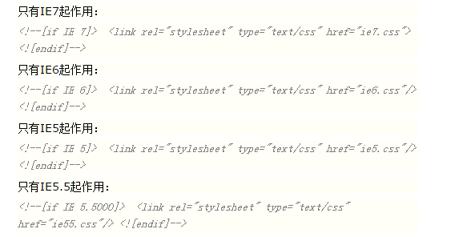

1.让IE6/IE7/IE8浏览器支持圆角？

<!DOCTYPE> 声明位于文档中的最前面，处于 <html> 标签之前。告知浏览器的解析器， 用什么文档类型 规范来解析这个文档
严格模式的排版和 JS 运作模式是 以该浏览器支持的最高标准运行。
在混杂模式中，页面以宽松的向后兼容的方式显示。模拟老式浏览器的行为以防止站点无法工作。
引用 ie-css3.htc文件进行处理
2.a标签里绑定了点击事件，先执行 href 还是 事件？
先执行事件，后执行href
如果不想执行href跳转，只需要在onclick事件的最后加上return false.
3. JQ html()与append()的区别？
append() 方法在被选元素的结尾（仍然在内部）插入指定内容
html() 方法返回或设置被选元素的内容 (inner HTML)。
如果该方法未设置参数，则返回被选元素的当前内容。
返回元素内容当使用该方法返回一个值时，它会返回第一个匹配元素的内容。
4.判断是哪个浏览器，并使用对应的样式
使用if注释可以判断不同IE下，执行相应样式
判断是否IE；
<!--[if !IE]><!--> <link rel="stylesheet" type="text/css" href="not-ie.css" /> <!--<![endif]-->

5. MVC 之 Backbone.js ？
为复杂Javascript应用程序提供模型(models)、集合(collections)、视图(views)的结构。其中模型用于绑定键值数据和自定义事件；集合附有可枚举函数的丰富API； 视图可以声明事件处理函数，并通过RESTful JSON接口连接到应用程序。它是基于jquery和underscore的一个js框架。
主要组成：1.model：创建数据进行数据验证，销毁或者保存到服务器上2.collection：可以增加元素，删除元素，获取长度，排序，比较等一系列工具方法，说白了就是一个保存 models的集合类3.view：绑定html模板，绑定界面元素的事件，初始的渲染，模型值改变后的重新渲染和界面元素的销毁等优势：1. 将数据和界面很好的分离开来。2. 将事件的绑定很好的剥离出来，便于管理和迭代。3. 使得Javascript程序的模块化更加清晰、明了。应用场景：最适合的应用场景是单页面应用，并且页面上有大量数据模型，模型之间需要进行复杂的信息沟通。
6. Underscore.js框架
Underscore 是一个 JavaScript 工具库，它提供了一整套函数式编程的实用功能，但是没有扩展任何 JavaScript 内置对象。 他解决了这个问题：“如果我面对一个空白的 HTML 页面，并希望立即开始工作，我需要什么？” 他弥补了 jQuery 没有实现的功能，同时又是 Backbone 必不可少的部分。
Underscore 提供了100多个函数，包括常用的：map、filter、invoke — 当然还有更多专业的辅助函数，如：函数绑定、JavaScript 模板功能、创建快速索引、强类型相等测试等等。
Underscor.js定义了一个下划线（_）对象，函数库的所有方法都属于这个对象。这些方法大致上可以分成：集合（collection）、数组（array）、函数（function）、对象（object）和工具（utility）五大类。
7、rgba()与opacity的区别
8.SASS ?
sass中可以定义变量，方便统一修改和维护。
sass可以进行选择器的嵌套，表示层级关系，看起来很优雅整齐。
sass中如导入其他sass文件，最后编译为一个css文件，优于纯css的
@import
9.Doctype作用? 严格模式与混杂模式如何区分？它们有何意义?
<!DOCTYPE> 声明位于文档中的最前面，处于 <html> 标签之前。告知浏览器的解析器， 用什么文档类型 规范来解析这个文档
严格模式的排版和 JS 运作模式是 以该浏览器支持的最高标准运行。
在混杂模式中，页面以宽松的向后兼容的方式显示。模拟老式浏览器的行为以防止站点无法工作。
、DOCTYPE不存在或格式不正确会导致文档以混杂模式呈现。
10.行内元素有哪些？块级元素有哪些？ 空(void)元素有那些？
CSS规范规定，每个元素都有display属性，确定该元素的类型，每个元素都有默认的display值， 比如div默认display属性值为“block”，成为“块级”元素； span默认display属性值为“inline”，是“行内”元素。
行内元素有：a b span img input select strong（强调的语气） 块级元素有：div ul ol li dl dt dd h1 h2 h3 h4…p
知名的空元素： <br> <hr> <img> <input> <link> <meta>
鲜为人知的是： <area> <base> <col> <command> <embed> <keygen> <param> <source> <track> <wbr>
CSS规范规定，每个元素都有display属性，确定该元素的类型，每个元素都有默认的display值， 比如div默认display属性值为“block”，成为“块级”元素； span默认display属性值为“inline”，是“行内”元素。
行内元素有：a b span img input select strong（强调的语气） 块级元素有：div ul ol li dl dt dd h1 h2 h3 h4…p
知名的空元素： <br> <hr> <img> <input> <link> <meta>
鲜为人知的是： <area> <base> <col> <command> <embed> <keygen> <param> <source> <track> <wbr>
11.浏览器的内核分别是什么?
* IE浏览器的内核Trident、Mozilla的Gecko、Chrome的Blink（WebKit的分支）、Opera内核原为Presto，现为Blink；
* IE浏览器的内核Trident、Mozilla的Gecko、Chrome的Blink（WebKit的分支）、Opera内核原为Presto，现为Blink；
12.对BFC规范的理解？
（W3C CSS 2.1 规范中的一个概念,它决定了元素如何对其内容进行定位,以及与其他元素的关系和相互作用。）
（W3C CSS 2.1 规范中的一个概念,它决定了元素如何对其内容进行定位,以及与其他元素的关系和相互作用。）
13.new实例化.
1.创建一个新对象；
2.将构造函数的作用域赋给新对象（因此this就指向了这个新对象）；
3.执行构造函数中的代码（为这个新对象添加属性）；
4.返回新对象
2.将构造函数的作用域赋给新对象（因此this就指向了这个新对象）；
3.执行构造函数中的代码（为这个新对象添加属性）；
4.返回新对象
14.如何用闭包的方式整合有大量全局变量的JS.
自执行函数+闭包
15.JQ 的核心是什么